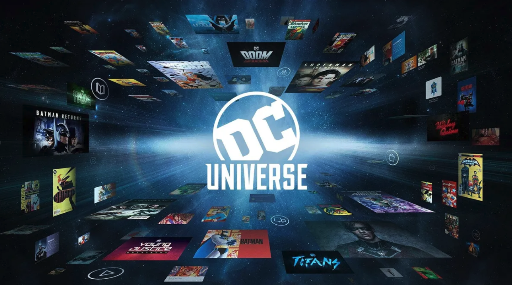
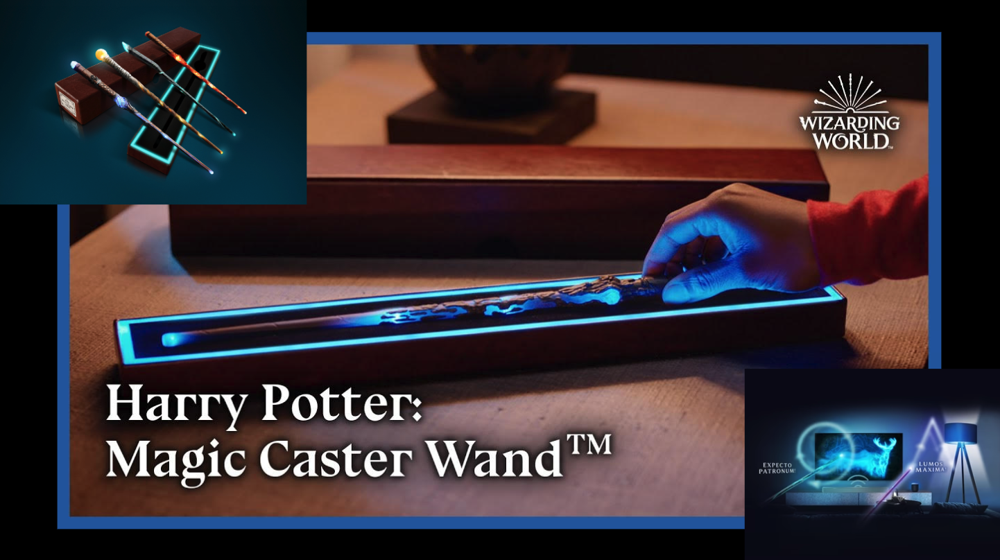
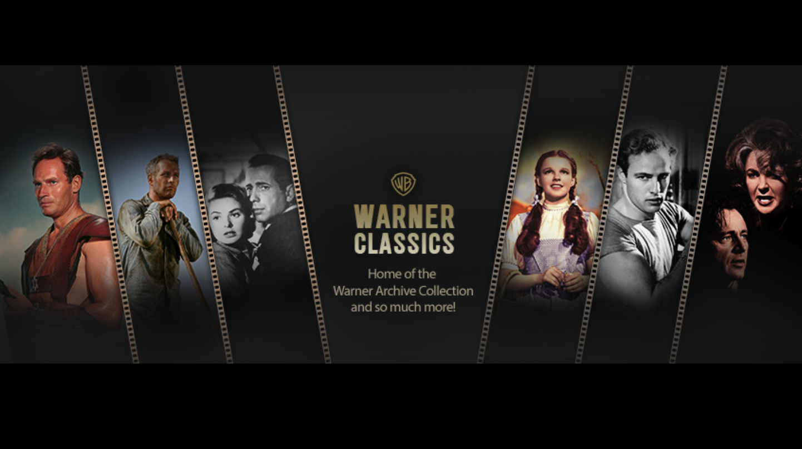
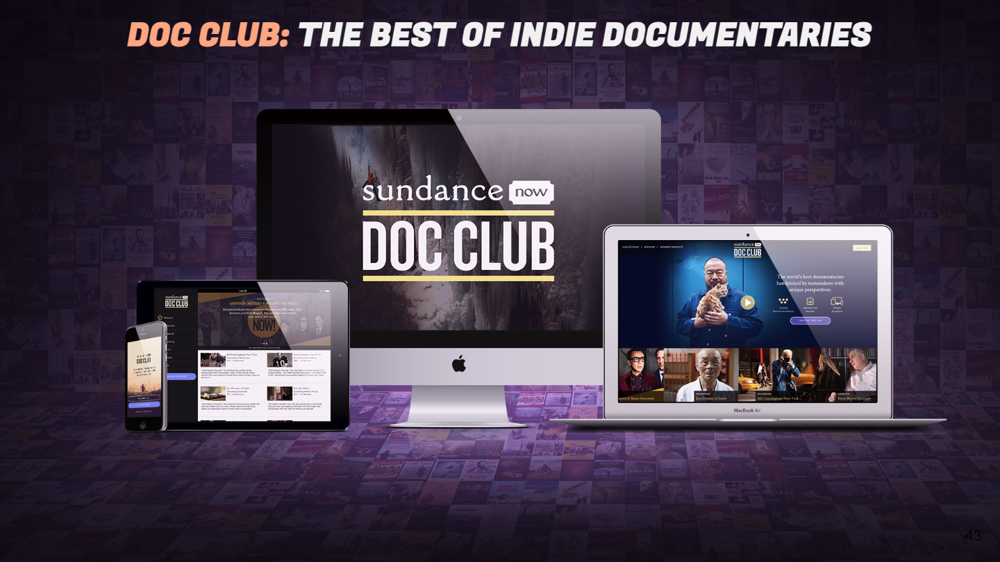
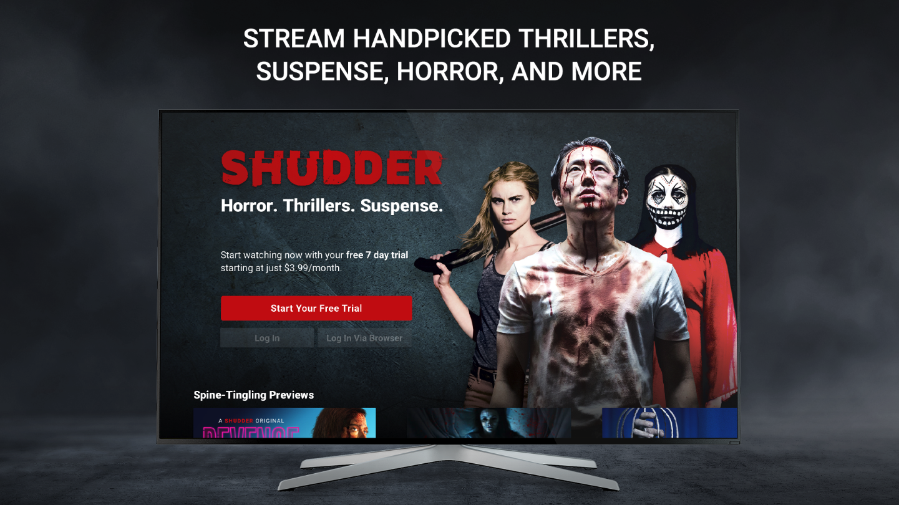

Experience Highlights
1235Media draws on decades of hands-on experience in developing transformative projects for the entertainment and media industry. Here are a few standout projects from our founder’s tenure at Warner Bros., where he played a key role in bringing innovative solutions to life across leading platforms:
-  DCUniverse: The ultimate hub for the DC fan! DC Universe launched as a singular destination containing every movie, every TV show, and every comic book from DC Comics. Intermixing the SVOD catalog of Christopher Reeve’s Superman, Ben Affleck’s Batman, new originals like the Harley Quinn Animated Series, and hundreds of other video titles. The app also features roughly 30,000 digital comic books in a proprietary “reader,” a robust collection of news articles and daily video podcasts, and an e-commerce platform.
-
 Boomerang: Boomerang packaged Saturday Morning cartoons, with all of their nostalgia and family-oriented content, within a singular destination. Leaning into a kid-friendly build, COPPA compliant and ready for families across the United States, Boomerang delivered a powerful streaming video on demand subscription business across every available content viewing platform.
Boomerang: Boomerang packaged Saturday Morning cartoons, with all of their nostalgia and family-oriented content, within a singular destination. Leaning into a kid-friendly build, COPPA compliant and ready for families across the United States, Boomerang delivered a powerful streaming video on demand subscription business across every available content viewing platform. -
 DramaFever: We built a full tool suite supporting streaming-video-on-demand, including the core platform, content ingest, subtitle management, and performance tracking mechanics. From the fan side, the app was available across all platforms, offering content for free, and a premium package to subscribers. We catered to the audience base in over 10 languages, around the globe, growing the KDrama fanbase via digital efforts, as well as in-person activations like the DramaFever awards and KDrama fan community hubs across the United States and LatAm.
DramaFever: We built a full tool suite supporting streaming-video-on-demand, including the core platform, content ingest, subtitle management, and performance tracking mechanics. From the fan side, the app was available across all platforms, offering content for free, and a premium package to subscribers. We catered to the audience base in over 10 languages, around the globe, growing the KDrama fanbase via digital efforts, as well as in-person activations like the DramaFever awards and KDrama fan community hubs across the United States and LatAm. -
 Harry Potter Wizarding World: With Wizarding World was tasked with saving the official Harry Potter Fan Club.
We evaluated the right market fit and greatly enhanced the experience, paying close attention to features and scalability of the site and app. Within the experience we built, fans can be sorted into their official House through an AR-powered interface, where the Sorting Hat (and mobile camera) defines the user as Gryffindor, Ravenclaw, Hufflepuff or Slytherin. We optimized the membership registration flow to accommodate 2M+ monthly activations.
Harry Potter Wizarding World: With Wizarding World was tasked with saving the official Harry Potter Fan Club.
We evaluated the right market fit and greatly enhanced the experience, paying close attention to features and scalability of the site and app. Within the experience we built, fans can be sorted into their official House through an AR-powered interface, where the Sorting Hat (and mobile camera) defines the user as Gryffindor, Ravenclaw, Hufflepuff or Slytherin. We optimized the membership registration flow to accommodate 2M+ monthly activations. -
 Hogwarts Legacy: The Hogwarts Legacy video game was largely done by WBGames Avalanche and Portkey games studios. However, a key part of its marketing was its ability to link gamers with a customer’s official profile from wizardingworld.com. This was wildly successful, far exceeding expectations of linking traffic. This was the best selling single player video game of 2023. The services our team provided worked very well and there are plans to use it for upcoming releases. Info on account linking can be found here.
Hogwarts Legacy: The Hogwarts Legacy video game was largely done by WBGames Avalanche and Portkey games studios. However, a key part of its marketing was its ability to link gamers with a customer’s official profile from wizardingworld.com. This was wildly successful, far exceeding expectations of linking traffic. This was the best selling single player video game of 2023. The services our team provided worked very well and there are plans to use it for upcoming releases. Info on account linking can be found here. -  Magic Caster Wand: Leaning into the universe we built within Wizarding World, we built and launched an experience that married physical devices, like a magic wand and smart lightbulbs, with the digital engagement of an app. Pairing the pieces together, fans were able to wield a magic wand and interact with elements in their living room – casting spells to turn lights on and off, activate televisions, and enchant audio.
-  Warner Archive: Reviving the back catalog of classic movies and series within Warner Bros., Warner Archive offered a powerful, and optimized streaming video on demand subscription service – surfacing a literal archive of content that could be found nowhere else on the planet.
-  AMC Sundance Now: Paired with the in-person Sundance Film Festival, the Doc Club app was a cohesive documentary-fan experience. The subscription based membership offered streaming video-on-demand to the latest and greatest within AMC’s catalog, as well as sharing the latest experiences from within the film festival – via online connection, or in-person activation.
-  AMC Shudder: Seeking to capitalize on the then-recent growth of the Walking Dead TV-series, AMC looked to our team and platform to build the ultimate destination for horror fans. Shudder was born as a streaming video-on-demand service, offering a subscription based membership, with exclusive access to a linear experience, to keep viewers streaming. Shudder has since gone on to be the recognizable brand within the space, creating in-person gatherings at cons and local events.
{kind=link}
{kind=link}
{kind=link}
{kind=link}
{kind=link}
Contact us: info@1235media.com